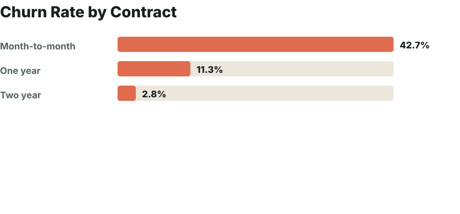
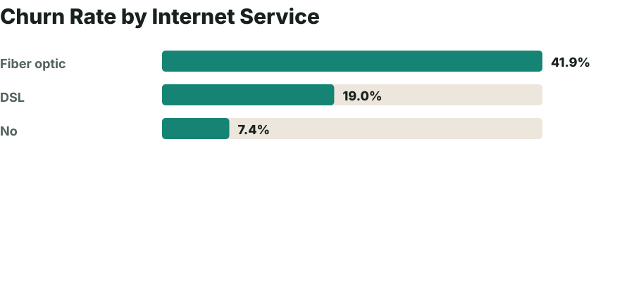
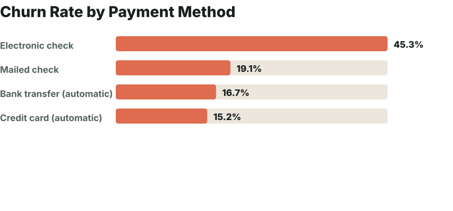
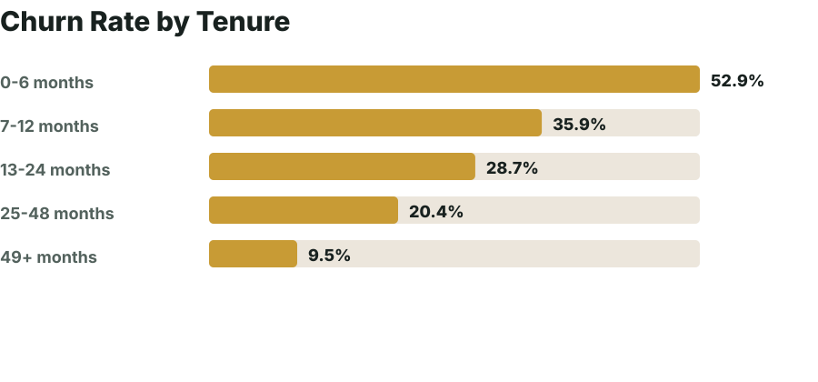
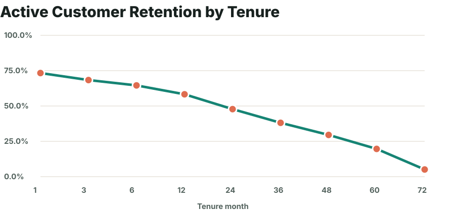

Contract Risk

Dashboard built from a telecom customer churn dataset with contract, tenure, service, payment, and billing behavior.
Customer base analyzed
Customers who left
Monthly revenue at risk
MRR tied to churned accounts
Observed customer lifetime
Month-to-month vs two-year churn





| Segment | Customers | Churn | Avg tenure | Avg monthly charge | Lost monthly revenue |
|---|---|---|---|---|---|
| Month-to-month | 3875 | 42.7% | 18.0 | $66 | $120,847 |
| One year | 1473 | 11.3% | 42.0 | $65 | $14,118 |
| Two year | 1695 | 2.8% | 56.7 | $61 | $4,165 |
| Segment | Customers | Churn | Avg tenure | Avg monthly charge | Lost monthly revenue |
|---|---|---|---|---|---|
| Electronic check | 2365 | 45.3% | 25.2 | $76 | $84,289 |
| Mailed check | 1612 | 19.1% | 21.8 | $44 | $16,804 |
| Bank transfer (automatic) | 1544 | 16.7% | 43.7 | $67 | $20,092 |
| Credit card (automatic) | 1522 | 15.2% | 43.3 | $67 | $17,947 |
Offer annual-contract discounts, pause options, and loyalty credits before renewal.
Audit support tickets, pricing perception, and service quality for fiber customers.
Nudge electronic-check customers toward auto-pay/card options with reminder and recovery flows.
Create onboarding, service education, and proactive support campaigns for customers under 12 months tenure.